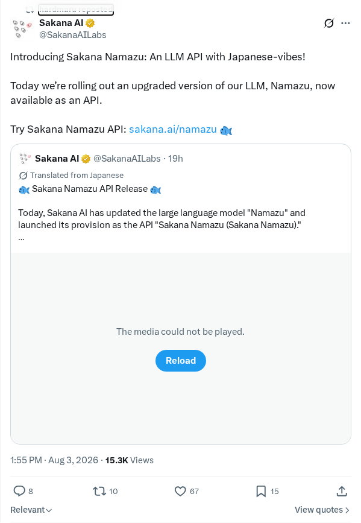
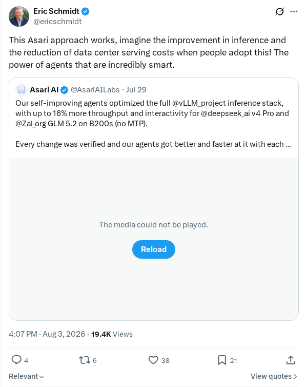
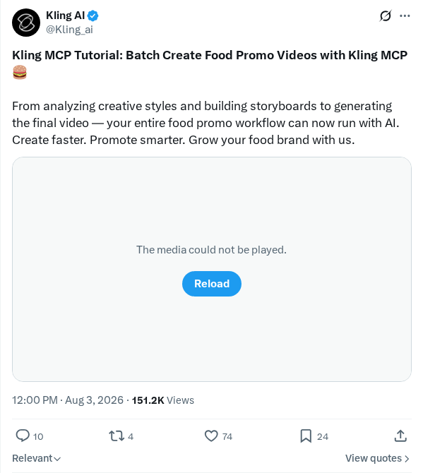
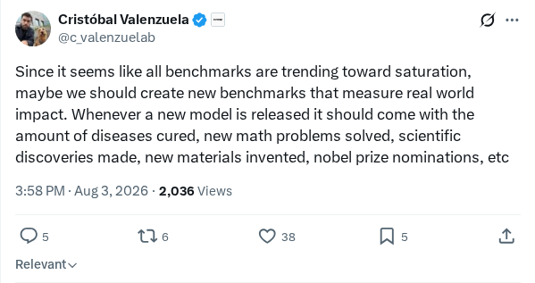
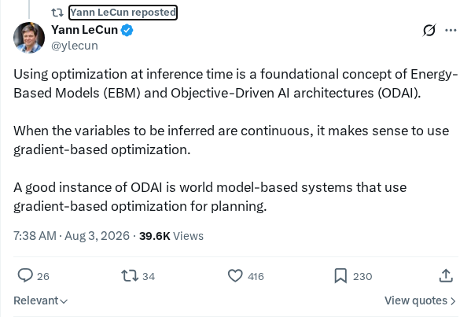
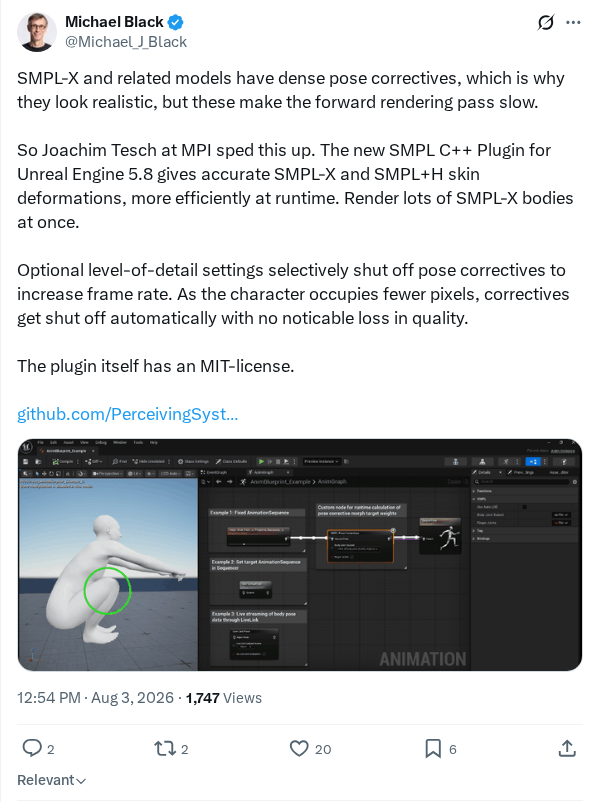

深入解析Kimi K3架构与Kimi Delta Attention
SemiAnalysis发表了一篇关于Kimi K3开放前沿模型架构设计的深度技术分析。为了优化内存和计算，Kimi K3引入了一种具有Kimi Delta Attention (KDA)特征的混合注意力机制。通过消除softmax操作，KDA将二次计算复杂度转换为线性复杂度。这使得历史键值向量可以被压缩成充当关联记忆的隐藏状态矩阵。模型中的其他机制包括压缩记忆、深度注意力以及潜在专家路由。
AI 前沿资讯、研究与趋势精选
SemiAnalysis发表了一篇关于Kimi K3开放前沿模型架构设计的深度技术分析。为了优化内存和计算，Kimi K3引入了一种具有Kimi Delta Attention (KDA)特征的混合注意力机制。通过消除softmax操作，KDA将二次计算复杂度转换为线性复杂度。这使得历史键值向量可以被压缩成充当关联记忆的隐藏状态矩阵。模型中的其他机制包括压缩记忆、深度注意力以及潜在专家路由。
Qwen团队发布了Qwen3.8-Max，这是一款专门的对话式AI模型，旨在处理复杂的编程、多步逻辑推理及交互式结对编程。该模型针对高上下文理解进行了优化，旨在降低开发人员在实时代码生成和调试过程中的阻力。此次发布标志着以代码为中心的辅助模型在支持人机协作开发方面迈出了重要一步，为新一代软件工程工作流铺平了道路。
OpenAI发布了一份报告，重点介绍了数学与理论计算机科学交叉领域的十大发展，这些领域利用先进的计算模型和深度学习来解决长期悬而未决的猜想。该研究也出现在有关OpenAI代号为“Astra”的未发布模型解决重大数学难题的报道中。这些里程碑证明了机器学习如何成为证明验证、算法效率和符号推理的催化剂。
ComfyUI宣布在其节点式生态系统中对最新发布的MiniMax H3模型提供即时支持。MiniMax H3具备开放权重，允许用户在本地运行生成式工作流。该模型提供了先进的多模态生成功能，包括原生音频合成和高分辨率2K视频生成。通过原生集成这些能力，ComfyUI使创作者无需依赖外部云API即可构建复杂的多媒体生成流水线。
开源的AirLLM库发布，允许开发人员在消费级硬件上运行诸如LLaMA-2-70B等庞大的70B参数模型，且仅需4GB显存。该项目通过分层推理、逐块加载和激进的模型量化等先进的内存节省技术实现了这种资源效率。此举普及了大语言模型的使用，实现了无需昂贵多显卡配置即可进行本地、隐私保护的推理。
Theodore和Louis推出了Armature，这是一个专门为模型上下文协议（MCP）工具提供商设计的新型产品分析与评估平台。通过实现支持TypeScript、Python和Go的轻量级三行SDK，开发者可以重构用户会话。该平台直接在Claude或ChatGPT等界面中可视化智能体与用户的对话，将会话数据分组以揭示应用场景，并突出显示智能体的错误。
Bence和Ryan推出了Hoplite，这是一个由YC S26支持的平台，旨在简化编码智能体在云环境中的部署。Hoplite通过将本地开发会话、上下文记忆和模型上下文协议（MCP）服务器移植到云端基础设施来自动化入职流程。该平台协助开发者进行质量保证、功能验证以及在云端管理持久、可扩展的AI驱动软件开发工作流。
Nightcrawler，一个开源的本地AI渗透测试智能体，现已在GitHub发布，设计用于直接在移动智能手机上运行。该系统允许网络安全专业人员离线执行自主网络扫描、漏洞利用分析和系统审计任务。通过在资源受限的边缘设备上完全本地运行推理，该工具优先考虑用户隐私并确保操作机密性，而无需依赖外部云API。
Cloudflare引入了新的性能优化措施，用于在其全球边缘网络上部署流行的大语言模型（如Kimi和GLM）。通过利用先进的模型量化和内存高效的运行时环境，该系统降低了边缘原生推理的延迟和计算开销。安全和隐私保护被直接构建到运行时环境中，以在去中心化处理过程中保护敏感的开发者和用户数据。
Hailuo AI正式发布了其H3多模态视频生成模型的开放权重版本。这一从专有开发向开放权重的战略转型旨在通过提供强大的视频合成技术开放访问权，赋能创作者和开发者。更新后的H3模型具有增强的多模态支持，可处理多达12个参考文件，包括图像、视频和音频。它引入了商业级的动作设计能力、高级标题动画，并在动画化静态插图和渲染生成帧内文本方面展现出卓越的保真度，代表了视频生成领域的一个重要开放获取里程碑。

Sakana AI正式宣布推出其专门的大语言模型Namazu的升级版本，该模型现已通过API接口提供。该模型在设计时特别强调了日语语言细微差别和文化背景，旨在为开发者提供强大、本地化的日语处理能力。此次发布代表了这家东京实验室的重要技术进步，为不断增长的特定语言AI市场提供了量身定制的高性能推理和自然语言生成质量。

Eric Schmidt强调了Asari方法在提高推理效率和降低数据中心使用先进AI智能体运营成本方面的潜力。通过利用这些智能体框架，组织可以实现比传统方法更优的性能水平。这一转变强调了优化计算经济学、推理延迟和资源消耗，使得自主智能体系统更易于大规模企业部署和云基础设施环境。

Kling AI发布了一份新教程，展示了如何利用其模型上下文协议（MCP）自动化美食宣传视频的制作。该系统简化了整个生产流水线，在自动化的创意工作流中管理艺术风格分析、故事板开发和视频合成。这种协议集成凸显了企业如何应用生成式工具来满足特定的营销需求并优化视频广告流水线。

Cristobal Valenzuela提出，随着标准基准测试达到饱和，应将评估指标转向基于影响的基准测试。该提案建议，新模型发布时必须展示实际效用和切实的世界贡献，例如发现疾病疗法、解决复杂的数学问题或加速一般的科学发现，而不是仅仅优化基准测试分数。

Yann LeCun讨论了在能量模型（EBM）背景下，推理阶段优化所扮演的基础角色。他强调，在推理时采用优化是支撑目标驱动AI架构的核心概念。该机制允许EBM通过关注能量表面来定义行为，从而区别于传统模型，改善了机器学习系统中的目标导向推理和适应性。

马克斯·普朗克研究所的Joachim Tesch推出了一款专为Unreal Engine 5.8设计的新型SMPL C++插件，用于优化人体模型渲染。虽然SMPL-X和SMPL+H等高真实感模型传统上对前向渲染过程带来了巨大的计算负担，但这种集成解决了延迟瓶颈，实现了游戏引擎环境下的实时皮肤变形。
AutoScientist平台宣布进行架构扩展，集成了处理异构数据格式的多模态能力。除了纯文本输入外，该平台还可以原生解析图像、图表和文档，以自动化复杂的科研分析。此次更新旨在弥合科学和企业研究场景中自动化推理与视觉数据解释之间的鸿沟。
研究人员提出了带自验证奖励的强化学习（RLSVR）及其多智能体自我对弈实例化SpyRL，以将LLM强化学习扩展到数学和编码等确定性领域之外。RLSVR将开放式的LLM任务转换为可验证的代理环境，智能体的交互结果生成内部奖励信号。在涵盖文本摘要、创意写作和数学推理的实验中，SpyRL在不可验证任务上的表现优于现有的自我提升方法，同时在可验证推理挑战中保持了强大的性能。
研究人员引入了稳定优势融合（SAF）训练框架，旨在结合带验证奖励的强化学习（RLVR）与策略蒸馏（OPD），同时避免引发熵坍塌。SAF使用四阶段流水线，具备用于幅度控制的稀疏化-压缩机制和用于时间控制的预热-退火机制。在七个数学推理和代码生成基准测试中，使用GRPO在Qwen3-1.7B/4B/8B模型上评估该框架，显示出总分提升了0.51%至2.70%，且训练过程更加稳定。
研究人员引入了反事实敏感度信用重新分配（CSCR），这是对GRPO强化学习框架的扩展，旨在改善大语言模型的长思维链（Long-CoT）推理。对信用分配机制的研究显示，策略自我蒸馏中的特权偏移无法提供可靠的答案对齐方向，其幅度反映的是Token层面的敏感度而非推理价值。通过降低高度敏感的表面Token的权重并重新规范化Token优势，CSCR在相同的更新预算下，在长思维链数学推理基准测试中持续优于GRPO基线。
研究人员提出了基于准则的策略优化（CriPO），这是一种通过在线自蒸馏增强大语言模型基于准则的强化学习的训练方法。CriPO在不引入训练与推理不匹配的情况下，解决了“未探索准则”和“被抑制准则”的核心局限。它利用准则注入的自教师来引入缺失的行为，利用反事实自教师将正向优势重新分配给负面Rollout中的有用Token。在科学和医学基准测试中，CriPO优于标准基于准则的强化学习，以两倍少的优化步数实现了更强的最终性能。
研究人员开发了EMBL AI Librarian，这是一个专门的知识层，旨在为生命科学领域的AI智能体升级Europe PMC界面。该系统使用单个LLM通过生成子查询、搜索超过4000万条索引记录并提取精确证据来编排文献检索。在ScholarQABench上，Librarian的引用F1值比强大基线提高了16分以上，且使用该检索层的GPT-5.4智能体在开放式LitQA2基准测试中的得分比标准网页搜索高出约8分。
研究人员构思了心理世界建模（MWM），这是一个将物理状态和隐性心理状态整合到预测世界模型中的理论框架。该框架在MENTIS中实例化，这是一个无需训练的基线，可处理状态解析、动作分解和状态转换模拟。在自定义的文本、图像和影音故事的情境决策数据集上，对八种基于LLM的世界模型进行评估表明，显式追踪智能体的内部信念、意图和欲望对于预测人类决策至关重要，揭示了纯物理世界模型的局限性。
LlamaIndex发布了ExtractBench，这是一个为企业文档的模式导向提取而设计的智能体评估基准。ExtractBench包含来自8个业务领域、67种文档类型的370份文档、4869页内容，旨在衡量价值准确性、记录完整性、落地（Grounding）及成本。评估结果显示，商业多模态模型（VLM）通常在处理长文档时表现挣扎并截断列表，而编码智能体在高成本下保持了高准确性。LlamaExtract Agentic Plus模型在所有评估指标中排名第一，以较低的操作成本实现了媲美编码智能体的准确性。
研究人员引入了SaliTrap基准测试，用于研究大语言模型中的显著性偏见（Salience Bias），即模型优先考虑显式但无关的输入，而不是隐含的常识前提。评估12个最先进的LLM表明，当面临干扰特征时，模型更多是表现出知识抑制而非知识缺失。去除误导性的任务框架并利用无上下文的知识探测恢复了超过90%的模型依从性失败。此外，轻量级的推理时提示被证明可以在无需额外模型训练的情况下弥补这一推理差距。